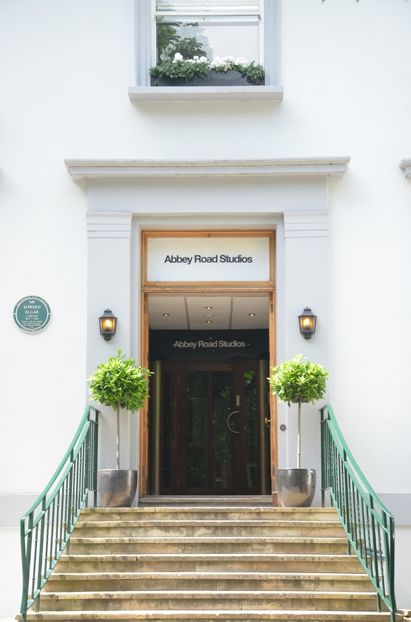
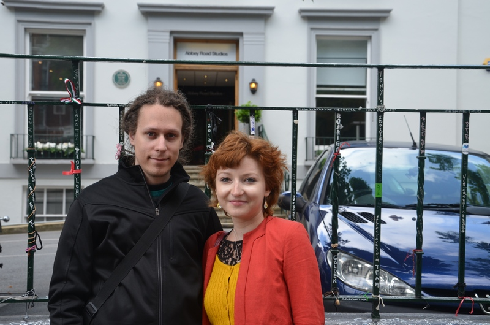
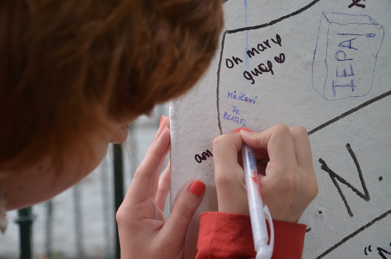
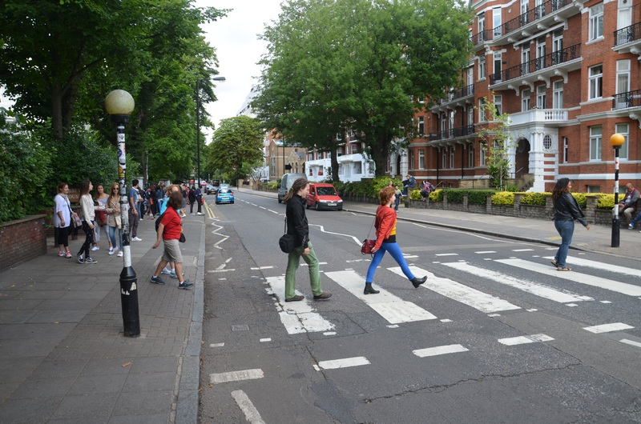
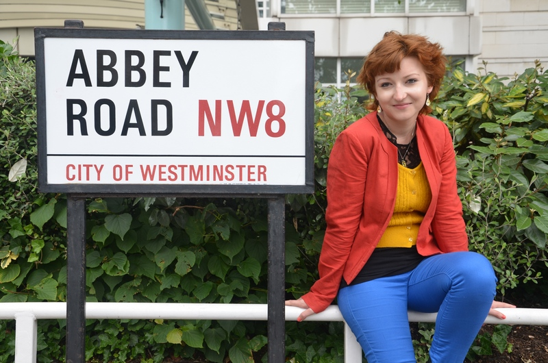
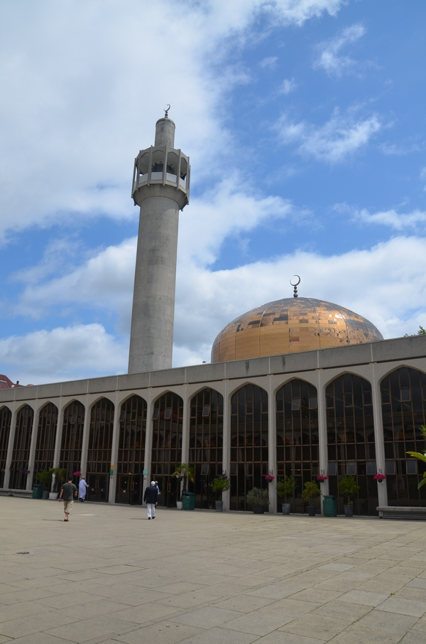
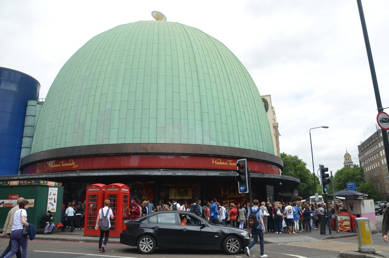
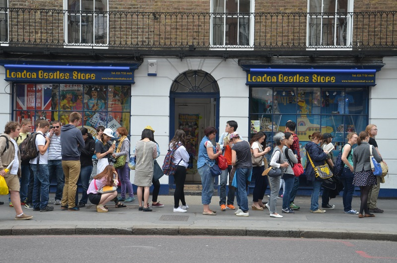
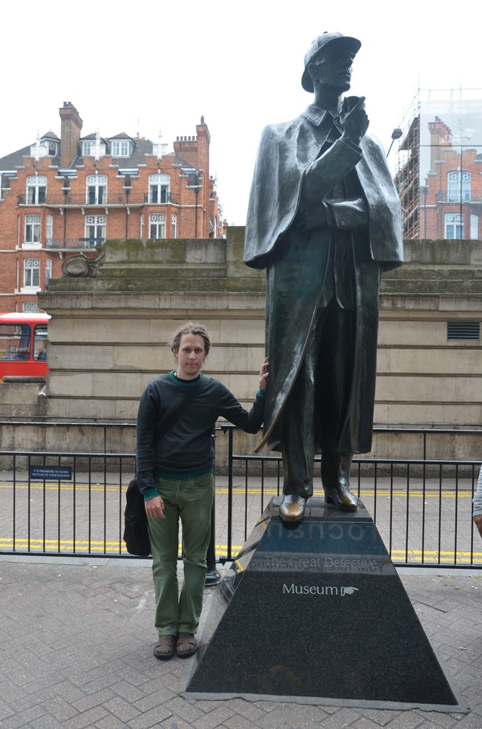

Co si budeme nalhávat… jsou sny, které se nikdy nesplní. Všichni takové máme. Ale pak jsou taky sny, které by se splnit mohly. Já jsem dobrou desítku let snila o dnu, kdy se bosá proběhnu po přechodu na Abbey Road. Budu kráčet stejnými místy, kterých se kdysi dotýkala chodidla slavných Beatlů (přejděme fakt, že se ten původní přechod o pár metrů posunul :D). Ten sen se splnil. Ten den byl tady. A (nejen) o něm to dneska bude ;-).
Pro navození atmosféry beatlemánie si ke čtení dnešního příspěvku prosím pusťte toto :-):
Přestože Péťa není fanouškem Beatles, návštěvu posvátné půdy před nahrávacími studii v St. John’s Wood mi nemohl odepřít. Nalákala jsem ho, přiznávám, hlavně na webkamerku na stránce http://www.abbeyroad.com/Crossing :D.

Nahrávací studia
S čím jsem trošku nepočítala byl fakt, že focení na přechodu bude taková davovka. Skutečně mě překvapilo množství turistů, kteří sem přišli přejít přes přechod. Jenže pak jsem uviděla zeď před nahrávacími studii - celou popsanou a pokreslenou vzkazy od fanoušků z celého světa - a došlo mi, že tenhle přechod nebyl prohlášen britskou kulturní památkou jen tak pro nic za nic.

Abbey Road a my
Nejprve jsme začali SMSkovat do ČR, protože jsme byli domluvení s Žánkem a Péťovým bratránkem, že nás přes webkameru na webu vyfotí, až budeme přecházet. Na úvod jsme se ovšem zvěčnili na zdi - a to dokonce v zakázané zóně. (Že je za bránu nahrávacích studií vstup zakázán jsem zjistila až poté, co mé mistrovské dílo bylo dokonáno… což mu jistě dodává na hodnotě :D!)

Byli jsme tam!!
Samotné přecházení a tvorba fotky byl docela porod. Jednak ta strašná tlačenice fanoušků, do toho projíždějící auta…a ještě ke všemu ta jejich jízda vlevo! Člověk nevěděl, kam se koukat dřív. Myslím, že místní řidiči musí tenhle přechod fakt strašně nenávidět :D… Na mým místě byste se na vyzouvání bot asi taky vykašlali :D. Ale byli jsme tam! A kráčeli přes Abbey Road!

Crossing Abbey Road
Když už jsme měli toho nebezpečného přecházení tam a zpátky dost, zamávali jsme do Čech do webkamerky a vydali se ještě hledat ceduli s názvem ulice. Chtěla jsem mít alespoň jednu fotografii z Abbey Road “sama pro sebe”, bez tlačenice a davu ostatních fanoušků.

Sny se plní :)
A pak už jsme se s Abbey Road skutečně definitivně rozloučili a vydali se hledat Regent’s Park - údajně nejkrásnější z londýnských parků. Cestou jsme míjeli obrovskou mešitu, nacházející se hned na okraji parku. Asi bychom se sami neodvážili jít přímo dovnitř, ale jeden sympatický pán, který se tam šel právě pomodlit, se nás ujal, vzal nás s sebou a něco málo nám o mešitě povyprávěl. Samozřejmě jsme se museli vyzout a já si musela uvázat šátek přes hlavu. Byl to moc zajímavý zážitek - ještě nikdy jsem v mešitě nebyla - ale fotit jsme se neodvážili.

Mešita
Zvěsti nelhaly - Regent’s Park je skutečně překrásný. Obzvlášť jeho Queen’s Garden plná různobarevných růžových záhonů. Každá z růží má své jméno a některé květy jsou velké i jako dlaň. Je to určitě jedno z nejromantičtějších míst na světě a jestli půjdete někdy v Londýně na rande, jděte určitě do Regent’s Parku :-)! I my se rozhodli, že zde strávíme více času, ale nejprve si skočíme na nedalekou Baker Street pro něco k snědku a uděláme si pak v parku piknik.

Madam Tussaud’s
Baker Street bylo jedno z nejvíce zalidněných míst, která jsme v Londýně navštívili. Svůj podíl na tom má jistě Muzeum Madam Tussaud, jehož fronta se táhne daleko předaleko. My jsme se rozhodli Tusseaud’s vynechat a dobře jsme udělali. Na Baker Street jsou totiž mnohem příjemnější místa, kde se dají utrácet peníze :D…

Beatles Store!
Ano, třeba v Beatles Store! Dnešní den zkrátka patřil splněným snům… Jestli existuje ráj, představuju si ho jako Beatles Store. Z reproduktorů hraje Working Class Hero a všude, kam se podíváte, jsou Beatles - na tričkách, na plackách, pohlednicích, kabelkách, ponožkách, budících, propiskách, skleničkách… viděla jsem dokonce i dětské dupačky nebo tašku na kolečkách pro důchodce :D! Asi nemá cenu popisovat vám extázi, kterou jsem zažila. Kdo nemiluje Beatles, stejně nepochopí :). Mít neomezený rozpočet, skoupím to tam všecko. Něco malého jsem si ale odvézt musela, to dá rozum. A tak to nakonec vyhrála oboustranná Beatlesácká taška s natištěnými podpisy všech čtyř Brouků.
Hned vedle Beatles Store se nachází Muzeum Sherlocka Holmese (k němu mimochodem vede ta fronta na fotce výše). Tam už jsme nešli, ale aspoň jsme se s Sherlockem vyfotili na ulici :-).

Sherlock Holmes
S prvními londýnskými suvenýry a balením sladkých muffinů jsme se vrátili zpátky do Regent’s Parku - vychutnat si tu růžovou nádheru. Nyní prosím omluvte záplavu poněkud monotematických fotek. Myslím, že se vážně povedly, ale ani tak nedokážou vystihnout, jak krásně tam ve skutečnosti bylo.


Posilnění jsme se posléze vydali z Regent’s Parku směrem k poslednímu cíli naší cesty - Camden Town. O tom vám ale povím zase někdy příště.
Komentáře (1)
Komentáře jsou uzavřené.